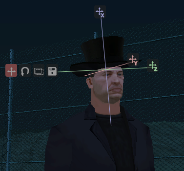

EditAttachedObject DE
From SA-MP Wiki
Description:
Versetzt einen Spieler in den Bearbeitungsmodus für an Spielern befestigte Objekte.
| Diese Funktion wurde erstmals in SA:MP 0.3e hinzugefügt und funktioniert nicht in älteren Versionen! |
(playerid, index)
| playerid | Die ID des Spielers, der in den Bearbeitungsmodus versetzt werden soll |
| index | The index (slot) of the attached object to edit |
Return Values:
1 bei Erfolg, 0 bei einem Fehlschlag (z.B. weil playerid offline ist)
public OnPlayerSpawn(playerid) { SetPlayerAttachedObject(playerid, 0, 1337, 2); } public OnPlayerCommandText(playerid, cmdtext[]) { if(!strcmp(cmdtext, "/edit", true)) { EditAttachedObject(playerid, 0); SendClientMessage(playerid, 0xFFFFFFFF, "SERVER: Du kannst nun das an dir befestigte Objekt auf Index 0 bearbeiten!"); return 1; } return 0; }
.
Hinweis | Man kann durch drücken der Sprinten-Taste und Bewegen der Maus auch im Bearbeitungsmodus die Kamera bewegen. |
Es gibt 7 verwendbare Buttons im Bearbeitungsmodus.
Die drei einzelnen Symbole mit X Y und Z können bewegt werden, um die Position/Rotation/Skalierung des Objekts zu bearbeiten.
Die vier Knöpfe in der Reihe sind zum Auswählen des Bearbeitungsmodus: [Bewegen] [Rotieren] [Skalieren] [Speichern].
Beim Klick auf [Speichern] wird OnPlayerEditAttachedObject aufgerufen.
[edit]
Verwandte Funktionen
Folgende Funktionen könnten ebenfalls nützlich sein, da sie in der einen oder anderen Weise mit dieser verwandt sind.
- SetPlayerAttachedObject: Befestigt ein Objekt an einem Spieler.
- RemovePlayerAttachedObject: Entfernt ein an einem Spieler befestigtes Objekt
- IsPlayerAttachedObjectSlotUsed: Prüft, ob ein Objekt in einem bestimmten Index an einem Spieler befestigt ist
- EditObject: Lässt einen Spieler ein Objekt bearbeiten.
- EditPlayerObject: Lässt einen Spieler ein spielerseitig erstelltes Objekt bearbeiten.
- SelectObject: Lässt einen Spieler ein Objekt auswählen.
- CancelEdit: Bricht die Objektbearbeitung für einen Spieler ab.
[edit]
Zugehörige Callbacks
Die folgenden Callbacks könnten hilfreich sein, da sie zusammen mit der Funktion arbeiten oder die Funktion dort ausgeführt werden kann. Template:OnPlayerEditAttachedObject DE

{kind=link}